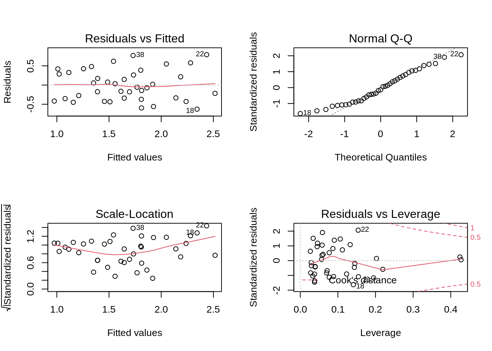

Exercise 8.2: Non-additive linear model on the poison dataset
Lieven Clement and Jeroen Gilis
statOmics, Ghent University (https://statomics.github.io)
1 The poison dataset
In this experiment, 96 fish (dojofish, goldfish and zebrafish) were placed separately in a tank with two liters of water and a certain dose (in mg) of the poison EI-43,064. The resistance of the fish against the poison was measured as the amount of minutes the fish survived after being exposed to the poison (Surv_time, in minutes). Additionally, the weight of each fish was measured.
2 Goal
Suppose that researchers are ,mainly interested in studying the effect of poison dose on the survival of fish. They know however that the weight can also impact the survival and might also change the effect of the poison dose.
In this tutorial session we will focus on Dojofish and we will model the survival time in function of the dose and the weight of the fish, and including an interaction between dose and weight.
Load libraries
library(tidyverse)
library(ggplot2)
#install.packages("GGally")
library(GGally)
library(car)
library(multcomp)3 Import the data
poison <- read_csv("https://raw.githubusercontent.com/statOmics/PSLS21/data/poison.csv")4 Data tidying
We can see a couple of things in the data that can be improved:
Capitalise the fist column name
Set the Species column as a factor
Change the species factor levels from 0, 1 and 2 to Dojofish, Goldfish and Zebrafish. Hint: use the
fct_recodefunction.In previous analysis on this dataset (
Simple linear regression session), we performed a log-transformation on the response variableSurv_timeto meet the normality and homoscedasticity assumptions of the linear model. Here, we will immediately work with log-transformed survival times; store these in the new variablelog2Surv_timeand remove the non-transformed values.Subset the data to only retain Dojofish.
poison <- poison %>%
rename("Species" = "species") %>%
mutate(Species = as.factor(Species)) %>%
mutate(Species = fct_recode(Species, Dojofish = "0", Goldfish = "1", Zebrafish = "2")) %>%
mutate(log2Surv_time = Surv_time %>% log2) %>%
dplyr::select(-Surv_time) %>%
filter(Species=="Dojofish")
poison5 Data exploration
Prior to the analysis, we should explore our data. To start our data exploration, we will make use of the ggpairs function of the GGally R package. This function will generate a visualization containing multiple panels, which display (1) univariate plots of the different variables in our dataset, (2) bivariate plots and (3) correlation coefficients between the different variables.
poison %>%
ggpairs + theme_bw()
Based on these plots, we observe that:
- The survival time seems to be associated with dose and fish weight.
From the tutorial of H6 we have seen that the fish weights were not nicely uniform across the different poison dosages due to the randomisation.
poison %>%
filter(Species == "Dojofish") %>%
ggplot(aes(x = Dose, y = Weight)) +
geom_point() +
ggtitle("Association between dose and weight") +
theme_bw() +
stat_summary(
geom = "point",
fun = "mean",
col = "black",
size = 4,
shape = 24,
fill = "red")
6 Analysis with main effect and interaction for dose and weight
6.1 Model specification
\[ y_i=\beta_0+\beta_d x_d + \beta_g x_g +\beta_{d:g} x_d x_g+ \epsilon_i, \]
with \(\epsilon_i \text{ i.i.d. } N(0,\sigma^2)\)
6.2 Assumptions
The model will again be fit to allow for assessing the model assumptions
# lm_Int <- lm(log2Surv_time ~ Dose+Weight+Dose:Weight, data = poison) # equivalent
lm_Int <- lm(log2Surv_time ~ Dose*Weight, data = poison) # * -> short notation
par(mfrow=c(2,2))
plot(lm_Int)
The plots look very similar to those of the additive model from the previous exercise so we know that all assumptions are met.
6.3 Inference
We then inspect the results.
summary(lm_Int)##
## Call:
## lm(formula = log2Surv_time ~ Dose * Weight, data = poison)
##
## Residuals:
## Min 1Q Median 3Q Max
## -0.62807 -0.34662 -0.05587 0.30656 0.79086
##
## Coefficients:
## Estimate Std. Error t value Pr(>|t|)
## (Intercept) -0.2851 2.4062 -0.118 0.906
## Dose -0.2217 1.5440 -0.144 0.887
## Weight 1.6061 1.1325 1.418 0.165
## Dose:Weight -0.3485 0.7242 -0.481 0.633
##
## Residual standard error: 0.416 on 35 degrees of freedom
## Multiple R-squared: 0.5173, Adjusted R-squared: 0.4759
## F-statistic: 12.5 on 3 and 35 DF, p-value: 1.036e-056.4 Interpretation of model parameters
We may interpret the estimate parameters as follows:
When we compare the log2 survival of fish with weight \(x_g\) that are exposed to a dose that differs with 1 mg/l, the expected log2 survival time will be \(\beta_d+\beta_{d:g}*x_g\) higher for the fish that were exposed to the highest dose.
When we compare the log2 survival of fish exposed to dose \(x_g\), but that have a weight that differs with 1 g, the expected log2 survival time will be \(\beta_d+\beta_{d:g}*x_g\) higher for fish with the highest weight.
The parameter \(\beta_{d:g}\) thus shows that the effect of dose on the log2 survival time is dependent on the weight of the fish, and, that the effect of weight on the log2 survival time dependents on the dose that was administered.
6.5 Inference
The effect of dose is now parameterized by two model parameters (\(\beta_d\) and \(\beta_{d:g}\)). We first evaluate an omnibus hypotheses that there is no effect of dose, i.e., no main effect nor an interaction effect. We can test this with an F-test that compares a full model (1) containing a main effect for dose, a main effect for weight and an interaction between dose and weight with a model (2) that only contains a main effect for weight (i.e. no effect for dose).
lmDojo_weight <- lm(log2Surv_time ~ Weight, data = poison)
anova(lmDojo_weight, lm_Int)We observe an extremely significant (overall, or global) effect for dose on the log2 survival time of dojofish (p-value <<0.001)`.
6.6 Conventional approach
We already established that there is a significant overall effect of dose. Now, we will test if there is a significant interaction effect between dose and weight. Since we only have one interaction term in this model, this can be achieved in several ways:
- The
summaryfunction - An F-test comparing models with and without the interaction effect
- An ANOVA table with type III sum of squares
summary(lm_Int) #1##
## Call:
## lm(formula = log2Surv_time ~ Dose * Weight, data = poison)
##
## Residuals:
## Min 1Q Median 3Q Max
## -0.62807 -0.34662 -0.05587 0.30656 0.79086
##
## Coefficients:
## Estimate Std. Error t value Pr(>|t|)
## (Intercept) -0.2851 2.4062 -0.118 0.906
## Dose -0.2217 1.5440 -0.144 0.887
## Weight 1.6061 1.1325 1.418 0.165
## Dose:Weight -0.3485 0.7242 -0.481 0.633
##
## Residual standard error: 0.416 on 35 degrees of freedom
## Multiple R-squared: 0.5173, Adjusted R-squared: 0.4759
## F-statistic: 12.5 on 3 and 35 DF, p-value: 1.036e-05lm_additive <- lm(log2Surv_time ~ Dose + Weight, data = poison) #2
anova(lm_additive,lm_Int) #2Anova(lm_Int,type="III") #3There is no significant interaction between dose and weight. As such, the effect of dose on survival is not signifiantly different between fish of different weight (p = 0.63).
The conventional approach is to remove the interaction effect from the model. As such, we are left with the additive linear regression model.
summary(lm_additive)##
## Call:
## lm(formula = log2Surv_time ~ Dose + Weight, data = poison)
##
## Residuals:
## Min 1Q Median 3Q Max
## -0.59629 -0.33110 -0.06836 0.32507 0.83315
##
## Coefficients:
## Estimate Std. Error t value Pr(>|t|)
## (Intercept) 0.8294 0.6457 1.285 0.207119
## Dose -0.9590 0.1888 -5.081 1.17e-05 ***
## Weight 1.0783 0.2792 3.862 0.000451 ***
## ---
## Signif. codes: 0 '***' 0.001 '**' 0.01 '*' 0.05 '.' 0.1 ' ' 1
##
## Residual standard error: 0.4116 on 36 degrees of freedom
## Multiple R-squared: 0.5141, Adjusted R-squared: 0.4871
## F-statistic: 19.04 on 2 and 36 DF, p-value: 2.282e-062^(lm_additive$coef) # original scale## (Intercept) Dose Weight
## 1.777004 0.514402 2.1114842^(confint(lm_additive))## 2.5 % 97.5 %
## (Intercept) 0.7169728 4.4042734
## Dose 0.3945101 0.6707292
## Weight 1.4259918 3.12650186.6.1 Conclusion
The conclusion is exactly the same as for the additive model analysis above (obviously, as we are dealing with the same model):
The dose of the poison has an extremely significant effect on the survival time of dojofish (p-value << 0.001). The geometric average of the survival time for dojofish that are exposed to a poison dose that is 1mg/L larger is approximately halved, factor = \(2^{\beta_d}=\) 0.51) .
The effect of dose on survival is not significantly different between fish of different weight. (p = 0.63).
7 Remark
Note, that we have have to test if the interaction is significant before using the additive model.